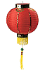
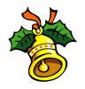

Рождество празднуют во всём мире, однако традиции его встречи значительно различаются. В данной статье обобщена информация о старинных обрядах и самых интересных моментах, касающихся встречи Рождества в различных странах.
Австралия
Представьте себе новогодние и рождественские праздники посреди лета. Австралия — одна из многих стран, где не бывает «белого Рождества». Маленькие австралийцы очень любят праздники, кроме того, они совпадают с началом школьных каникул.
Рождество впервые отпраздновали в Австралии 25 декабря 1788 г. У австралийцев есть целый ряд традиций, таких как украшение домов ветками вечнозеленых деревьев и приготовление обеда с индейкой и рождественским пудингом.
Австрия
Празднование дня Святого Николса (Николая) ознаменовывает начало рождественских праздников в Австрии. Из церквей доносятся звуки хоралов, и певцы каролей (рождественские песни) с горящими факелами ходят из дома в дом и собираются на церковных ступенях. Святой в сопровождении чёрта расспрашивает детей об их хороших и плохих поступках. Хорошие дети получают сладости и игрушки. Подарки кладут под ёлку и открывают после Рождественского обеда.
Великобритания

В Великобритании на Рождество вместо Санта-Клауса приходит Отец Рождество (Father Christmas). Дети пишут ему письма и бросают их в камин вместо почтового ящика. По легенде, Отец Рождество читает их в дыму. Дети также вывешивают свои носки над камином для подарков.
Пение каролей является частью старинных английских праздничных традиций. Большинство из широко известных во всём мире рождественских песен были написаны в ХIХ веке и пришли к нам из Англии. Традиционным блюдом английского рождественского стола в течение уже многих столетий служит жареная кабанья голова.
Германия
Немцам нравится украшать свои дома в Рождество. На окна вешают светящиеся гирлянды и разноцветные картинки, великолепно выглядящие снаружи в тёмное время суток. Во многих домах ставят игрушечные ясли с героями рождественских историй.
Ещё одной традицией является «адвентский венок» — гирлянда листьев с четырьмя свечами. (Адвент переводится как «пришествие» и длится 4 недели до Рождества). Каждое воскресенье адвента на венке зажигают по одной свече.
Египет
Коптская (египетская) церковь является ортодоксальной и празднует Рождество 7 декабря. В течение предшествующего праздникам рождественского поста, длящегося 40 дней, запрещено есть мясо, домашнюю птицу и молочные продукты, однако многие придерживаются его только в последнюю неделю. На Рождество египтяне одеваются в новую одежду и отправляются в церковь. Служба заканчивается в полночь звоном колоколов, после чего все возвращаются домой, и едят специальное рождественское блюдо — фату (fata), состоящее из хлеба, риса, чеснока и варёного мяса. На следующее утро принято навещать друзей и соседей.
Израиль
Рождество на Святой земле сопровождается наплывом туристов. Главное место паломничества — грот, отмеченный изображением 14 конечной серебряной звезды, где, по легенде, родился Иисус.
В Израиле Рождество празднуют неоднократно: сначала протестантская и католическая церкви, затем греческая ортодоксальная, коптская (египетская) и сирийская церковь, и, наконец, армянская церковь. Нередко службы ведутся одновременно, но в различных частях здания и на разных языках.
Главным блюдом традиционного рождественского обеда является индейка, приправленная перцем, корицей, мускатным орехом и начинённая рисом, мясом, орехами и миндалём.
Индия
В Индии на Рождество наряжают манговое или банановое дерево. Для украшения домов используют листья манго и пуансеттии (молочай красивейший, «рождественская звезда»). На стены и края плоских крыш помещают глиняные масляные лампы.
Китай

Любимым украшением китайцев являются фонарики, сделанные из разноцветной бумаги, внутрь которых помещают горящие свечи. Фонарики, искусственные цветы и бумажные гирлянды украшают рождественские деревья, называемые также «светящимися деревьями». Дети вывешивают чулки, ожидая прихода Дун Че Лао Рен, «Рождественского старика», — китайского Санта-Клауса.
Нидерланды
В то время как дети во многих странах оставляют для Санта-Клауса молоко, выпечку и развешивают чулки, маленькие датчане кладут в свои деревянные башмачки сено и сахар для оленей Зинтерклааса (Sinterklaas), чтобы найти их в ответ полными сладостей и орехов. Иногда Зинтерклаас приходит под видом отца или дяди. Он спрашивает детей, как они вели себя в прошедшем году. Ещё одной голландской традицией является дуть в специальные рога из цельного дерева, чтобы прогнать зло и объявить о начале Рождества.
Норвегия
Дети в Норвегии получают подарки от эльфа или гнома по имени Юлебукк (Julebukk). Эта традиция восходит к временам викингов и существует по сей день.
США
Рождественские праздники в Америке, похоже, начинаются с Хеллоуина, во всяком случае, такое впечатление создаётся, если зайти в универмаг. В действительности началом праздников служит День благодарения, за которым следуют рождественские распродажи по всей стране.
Американцы придерживаются многих традиций и обычаев со всего света и соединяют их, создавая свои собственные. Вы без труда их узнаете: приход Санта-Клауса, вывешивание чулок на камин и т.п. Пуансеттии также пользуется наибольшей популярностью это время года.
Финляндия

Финны верят, что Отец Рождество (Санта-Клаус) проживает в части Финляндии, называемой Корватунтури, в Северном полярном круге. Люди со всего света посылают туда письма для Санта-Клауса. Существует огромный парк развлечений под названием «Земля Рождества» на севере Финляндии поблизости от предполагаемого места его проживания. Жители Гренландии, однако, утверждают, что на самом деле Санта-Клаус проживает в их стране.
На рождество финны наряжают хвойное дерево, а вечером едят традиционный рождественский обед, включающий запеканку с макаронами, брюквой, морковью и картошкой с ветчиной или индейкой. Многие посещают кладбища, чтобы поставить горящие свечи на могилы родственников.
Швейцария

Звон серебряного колокольчика возвещает прибытие Христкиндли (Christkindli) — ангела в белом и в короне, украшенной драгоценностями. Она входит в каждый дом и раздаёт подарки из корзины, которую держат её маленькие помощники.
За неделю до Рождества дети наряжаются и ходят по домам с небольшими подарками. Колокольный звон является рождественской традицией и созывает прихожан на богослужение, по окончании которого семьи собираются вместе, чтобы поделиться огромными домашними пирожками, под названием рингли, и горячим шоколадом.
А вот как за рубежом представляют себе Рождественские и Новогодние праздники в России:

В годы советской власти в России Рождество широко не отмечали, а рождественские елки были запрещены, так что повсеместным праздником стал Новый год, хотя традиция наряжать к нему елку сохранилась. Подарки детям в этот день приносит дед Мороз.
После перестройки Рождество снова стали праздновать открыто 25 декабря или, более часто, 7 января. Столь необычная дата обусловлена тем, что русская ортодоксальная церковь придерживается юлианского календаря.
Рождественский обед традиционно начинается с особой каши, называемой кутья. В её состав входит много ингредиентов, каждый из которых имеет свое значение. Едят кутью из общей тарелки, что символизирует единство.
Christmas around the World.
Christmas traditions & customs round the world. How different countries celebrate Christmas.
SOON Magazine
PS: странно, почему за границей ничего не знают о замечательном салате оливье — традиционном российском новогоднем блюде?..
21591
Рождество, традиции | 


")